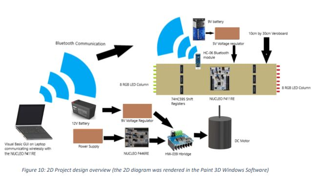
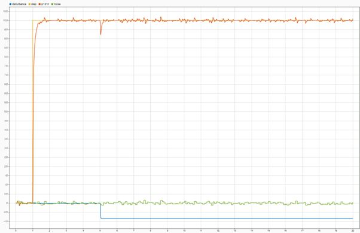
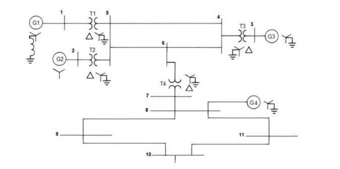
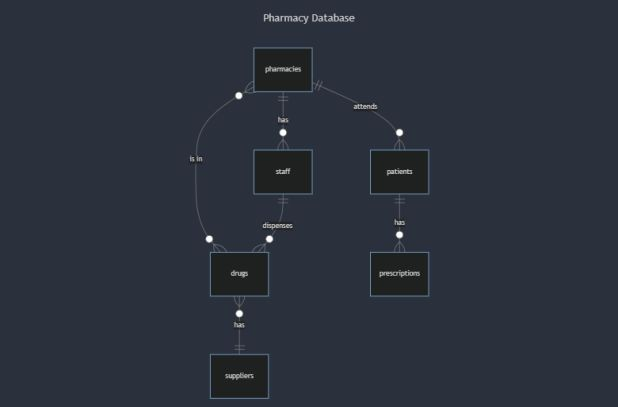
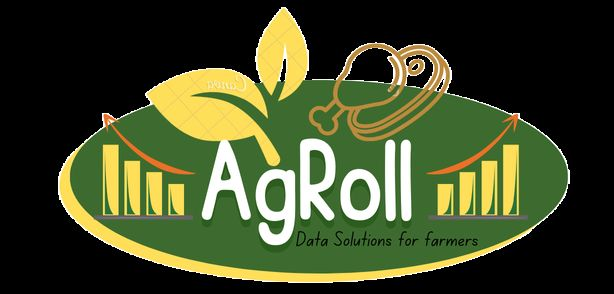

Kelvin Mafurendi
Electrical engineer. I test the protection and control systems that keep renewable power plants safe, and I build the embedded hardware and models that predict how machines behave.
- BEngTech (Hons), Nelson Mandela University
- Candidate Engineering Technologist (ECSA)
- Gqeberha, South Africa
About
I'm interested in one question: how do you build intelligent systems that hold up on real hardware, not just in simulation?
My Honours research at Nelson Mandela University built a hardware-in-the-loop digital twin of a three-phase induction motor and compared a physics-based model with a data-driven one, against both real sensor data and ideal simulation. Most of the hard lessons came from the hardware: noisy sensors, a data link that dropped three packets in four, and controllers that behaved perfectly in Simulink and oscillated on the bench.
Since November 2025 I've worked on the field side of the same problem, testing medium-voltage switchgear, protection relays and SCADA panels for utility-scale solar and wind projects. It is where I learned what real industrial systems demand: safety interlocks, strict acceptance tests and no room for a model that only works on paper.
- Based in
- Gqeberha, South Africa
- Registration
- Candidate Engineering Technologist (Electrical), ECSA
- Interests
- Physical AI and robotics, Industry 4.0, digital twins, protection and control, embedded systems
- Languages
- English, Shona
In the field
Where the models meet the switchgear.
-
Nov 2025 to now
Protection, control and switchgear testing
Utility-scale renewable energy projects
Before a solar or wind plant connects to the grid, every switchgear panel has to prove it will protect people and equipment when something goes wrong. I test those panels: breakers, current and voltage transformers, protection relays and the control logic that ties them together. On more than 10 projects so far, I've worked from the design drawings through to handing a tested system to the client.
A utility-scale solar plant
Wrote the protection relay configurations for the bus-section, incomer, collector and capacitor filter bank panels, then demonstrated the scheme to the client at Factory Acceptance Testing.
A wind energy facility
Simulated faults on the protection relays in 12 panels to prove they trip correctly, and fault-found the HV control and SCADA panels.
-
2020 to 2026
Electrical engineering at Nelson Mandela University
BEngTech, then BEngTech (Honours)
Six years that took me from C programming and circuit theory to machine modelling, control and power systems, finishing with distinctions in Electrical Power Systems, Applied Mathematics, Engineering Economics and Modelling and Simulation.
-
2021 to 2022
Teaching
Nelson Mandela University
I tutored first-year students in C programming, engineering mathematics and electrical drawing.
Projects
Research, coursework and personal builds. The colour marks the discipline.
9 projects
-
98%valid data capture after redesigning the logging link, up from about 25%
Real-time digital twin of an induction motor
A hardware-in-the-loop rig for a 1.75 kW induction motor, used to compare a physics-based dq-frame model with a data-driven N4SID model against real sensor data and ideal simulation.
- Built the acquisition platform on a TI C2000 DSP with Hall-effect voltage transducers, current transformers and an encoder sampled at 2 kHz.
- Cut voltage noise from 15–20% peak-to-peak to about 2% RMS with Sallen-Key filters, star-point grounding and isolated sensor boards.
- Found the physics model predicted inrush within 9.1% error, while the data-driven model held 6.4% steady-state error but missed transients.
TI C2000, ESP32, MATLAB/Simulink, System Identification, SPI
-
2RTOS threads, so the factory kept running when the Wi-Fi dropped
IoT controller for a part-painting line
C/C++ firmware for an STM32 under Mbed OS that loads, paints, colour-senses and sorts parts on a simulated factory line, with a mobile dashboard over MQTT.
- Ran the process as a finite-state machine with test and production modes, emergency stop, pause and timeouts for stuck cylinders and lost parts.
- Put Wi-Fi and MQTT on a separate thread through an ESP8266, publishing live counts and taking recipe and pause commands from the phone.
STM32 NUCLEO, Mbed OS, C/C++, ESP8266, MQTT
-

Bluetooth-controlled persistence-of-vision display
A spinning RGB LED display for advertising. You type a message in a Windows app, it travels over Bluetooth, and the display paints it in the air.
- Designed the circuits in KiCad and built them on Veroboard: two LED columns on six 74HC595 shift registers, a regulated supply and an H-bridge motor drive.
- Wrote Mbed C++ firmware on two STM32 boards, with a custom shift-register driver and a framed serial protocol.
STM32 NUCLEO, C++, KiCad, Visual Basic, Bluetooth, SolidWorks
-

Controller design for a DC motor, from data to hardware
Identified a model from logged data, designed PID and lead compensators, then made them work on real hardware.
- Chose a cross-validated 2nd-order model (93% fit) over higher-order fits that overfitted.
- When both controllers oscillated on the bench, traced it to unmodelled loop delay and re-tuned with the delay included: 0.07 s rise time and 0.01% steady-state error.
MATLAB System Identification, Control System Designer, Simulink, ESP32
-

Short-circuit and earthing study of an 11-bus network
Hand calculations of every fault type at every bus, checked against a full simulation.
- Built positive, negative and zero sequence networks and Zbus matrices on a 100 MVA base, and calculated three-phase, line-to-ground and line-to-line faults in MATLAB.
- Sized neutral earthing resistors to limit earth-fault current to about 10% of the three-phase fault level.
- Validated against PowerWorld Simulator, with fault currents agreeing within 0.01% at all 11 buses.
MATLAB, PowerWorld Simulator, symmetrical components
-
7bio-inspired optimisation algorithms reviewed and simulated
Swarm intelligence for motor parameter optimisation
A team review of cuckoo search, bacterial foraging, grey wolf, artificial bee colony, grasshopper, dragonfly and moth-flame optimisation for tuning induction motor parameters.
MATLAB, metaheuristic optimisation
-
CelebrEase
A mobile marketplace that connects photographers, venues and planners with people hosting weddings, parties and other events.
Flutter, Dart, Firebase
-

Pharmacy network database
A database design for dispensing software shared by a network of pharmacies, covering staff, patients, prescriptions, drugs and suppliers.
SQL, SQLite
-

AgRoll
A farm data and payroll management system with a Dash interface, written in object-oriented Python and tested with pytest.
Python, Dash, pytest
Credentials
- Candidate Engineering Technologist (Electrical)Engineering Council of South AfricaJan 2026
- CS50's Introduction to Programming with PythonHarvard UniversityMar 2024View
- CS50's Introduction to Databases with SQLHarvard UniversityMay 2024View
- Collaborative Robot BasicseNtsa Training Academy and SAIMechEJul 2025View
- Hands-on Deep Learning (self-study)MIT OpenCourseWare 15.773, TensorFlow/Keras2026
- Simulink OnrampMathWorks2022View
- Control Design Onramp with SimulinkMathWorks2022View
- Intro to Machine LearningKaggle LearnJan 2024View
- Data VisualizationKaggle LearnJan 2024View
- PandasKaggle LearnDec 2023View
- PythonKaggle LearnJan 2024View
Off the bench
Talks, writing, photography and a few early experiments.
Videos
Writing
- Baby AI
A series explaining AI in plain language. Mar 2024
- The Chief Cupbearer
A poem set in the corridors of an ancient Egyptian palace. Jan 2024
Fun corner
My first graphical program, built in Scratch for Harvard's CS50x. Press the green flag to play.
Photography
Loading photos…
Get in touch
A question about one of the projects, or an idea worth building together? Send me a message.
- mafurendiofficial@gmail.com
- kelvin-mafurendi
- GitHub
- Kelvin-Mafurendi
- Kaggle
- kevido
- Medium
- @mafurendiofficial